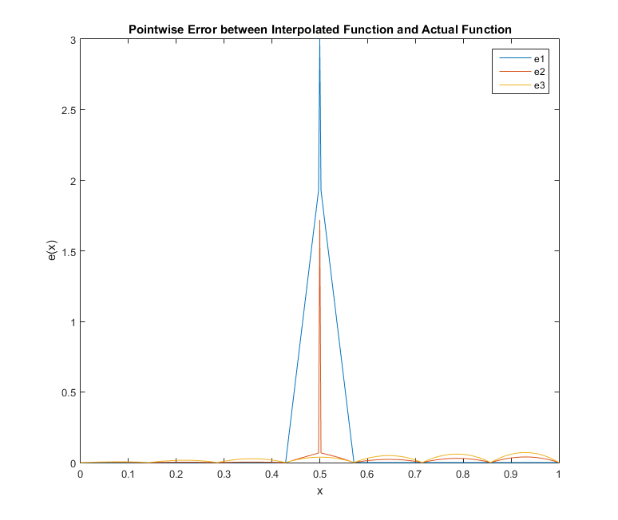
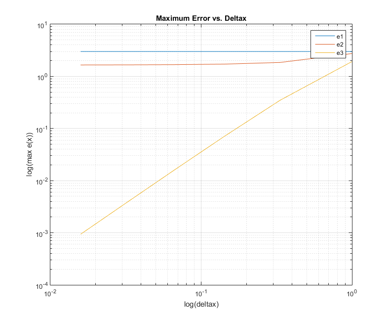

Contents
Alan Wang
Setup
n = 8;
xi = 0;
xf = 1;
xj = linspace(xi,xf,n);
u1 = @u1fun;
u2 = @u2fun;
u3 = @u3fun;
Part a
points = 49*n+1;
x = linspace(xi,xf,points);
u1_values = u1(x);
u2_values = u2(x);
u3_values = u3(x);
v1 = nodalApprox(u1,xi,xf,n);
v2 = nodalApprox(u2,xi,xf,n);
v3 = nodalApprox(u3,xi,xf,n);
e1 = abs(u1_values-v1);
e2 = abs(u2_values-v2);
e3 = abs(u3_values-v3);
e1max8 = max(e1);
e2max8 = max(e2);
e3max8 = max(e3);
figure(1)
plot(x,e1,x,e2,x,e3)
legend('e1','e2','e3')
xlabel('x')
ylabel('e(x)')
title('Pointwise Error between Interpolated Function and Actual Function')

Part b
N = [2,4,8,16,32,64];
deltax = zeros(1,length(N));
e1max = zeros(1,length(N));
e2max = zeros(1,length(N));
e3max = zeros(1,length(N));
for i = 1:length(N)
n = N(i);
deltax(i) = 1/(N(i)-1);
points = 49*n+1;
x = linspace(xi,xf,points);
u1_values = u1(x);
u2_values = u2(x);
u3_values = u3(x);
v1 = nodalApprox(u1,xi,xf,n);
v2 = nodalApprox(u2,xi,xf,n);
v3 = nodalApprox(u3,xi,xf,n);
e1 = abs(u1_values-v1);
e2 = abs(u2_values-v2);
e3 = abs(u3_values-v3);
e1max(i) = max(e1);
e2max(i) = max(e2);
e3max(i) = max(e3);
end
figure(2)
loglog(deltax,e1max,deltax,e2max,deltax,e3max)
legend('e1','e2','e3')
xlabel('log(deltax)')
ylabel('log(max e(x))')
grid on
title('Maximum Error vs. Deltax')
